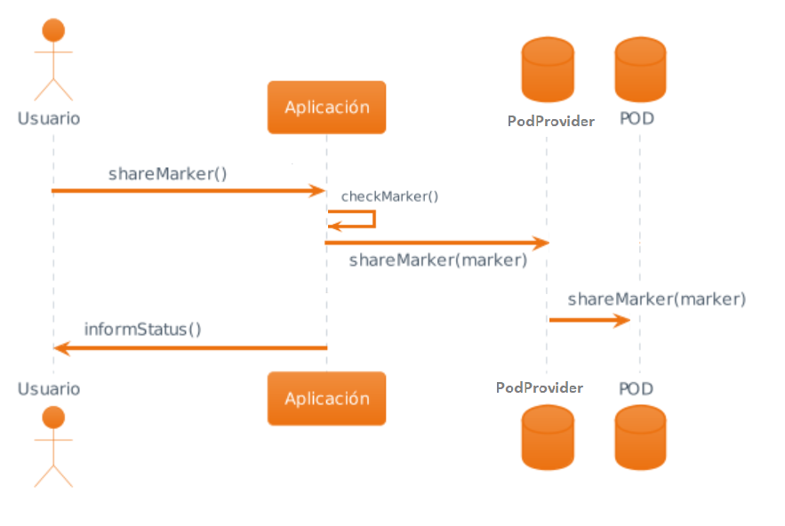
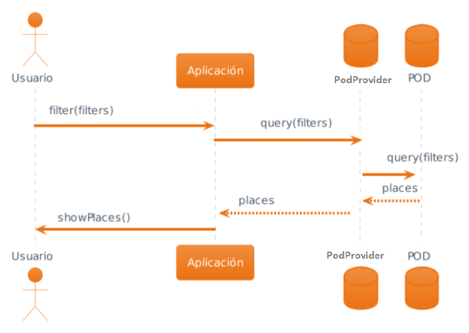

1. Introducción y objetivos
La petición del ayuntamiento de la ciudad de Bruselas es una aplicación que permita a sus ciudadanos tener un mapa donde puedan colocar marcadores en distintos sitios. Actualmente solo permite marcar sitios con diferentes tipos de marcadores dependiendo del lugar, los lugares posibles serán bares, restaurantes, monumentos, paisajes o tiendas. Los ciudadanos podrán crear sus propios mapas personalizados y compartirlos con sus amigos.
1.1. Descripción general de los requisitos
1.1.1. Requisitos de alto nivel
-
La aplicación permitirá a los usuarios visualizar un mapa donde estos podrán añadir diferentes marcadores.
-
Permitirá añadir diferentes tipos de marcadores dependiendo de si este se trata de un restaurante, un bar, un monumento, un paisaje o una tienda.
-
En la creacion de estos marcadores se permitirá añadir comentarios o valoraciones, puntuaciones, fotos de estos lugares.
-
La aplicación permitirá agregar amigos.
-
Se podrá compartir los distintos marcadores con los amigos del usuario donde estos podrán ver las valoraciones, fotos, etc que este marcador tiene asociadas.
-
El sistema permitirá utilizar filtros dentro del mapa ya sea por tipo de marcador o por amigo.
1.1.2. Requisitos opcionales
-
Permitir crear rutas de marcadores.
-
Permitir comparar mapas por categorias o tipos de marcadores.
-
Permitir que los distintos establecimientos tengan un POD donde los usuarios se puedan conectar.
-
Crear un mapa en conjunto, es decir, tener la posibilidad de que varios usuarios añadan marcadores a un mismo mapa.
-
Añadir roles entre los diferentes usuarios, como pueden ser: ciudadano, turista y dueño de negocio.
1.2. Objetivos de calidad
| Objetivos | Descripcion |
|---|---|
Privacidad |
Se utlizará los principios SOLID para garantizar la seguridad de los datos del usuario, quien será quien nos de acceso a los datos que considere oportunos a través del uso un POD, que será privado e independiente para cada usuario. |
Usabilidad |
La aplicación debe ser fácil de usar y entender para el cliente, con el fin de que puedan aprender a utilizarla rápidamente y sin mayores dificultades. De esta manera, se busca mejorar la experiencia del usuario al utilizar la aplicación y reducir el tiempo que requiere para familiarizarse con ella reduciendo la curva de aprendizaje. |
Eficiencia |
Se buscara unos cortos tiempos de respuesta de la aplicación, cosa que mejorará a la experiencia del cliente. |
1.3. Stakeholders / Personas interesadas
| Role/Nombre | Contacto | Expectativas |
|---|---|---|
Equipo de desarrollo |
HappySw |
Desarrollar la aplicación según las especificaciones y requisitos del cliente |
Cliente |
Ayuntamiento de Bruselas |
Se espera que entregue una especificación de los requisitos y que siga el projecto para comprobar que se ajusta a los requisitos especificados. También se espera que pueda añadir sitios, comentarios, valoraciones, etc a la aplicación |
Cliente Potencial |
Ayuntamientos de otras ciudades |
No se espera que participe en el proyecto, pero se espera que pueda contratar el servicio para tener la aplicación en el futuro para su ciudad |
Usuario Final |
Ciudadanos |
Que pueda utilizar la aplicación sin problemas con una esperada facilidad de uso y fluidez |
2. Restricciones de Arquitectura
2.1. Restricciones técnicas
| Restricción | Explicación |
|---|---|
SOLID |
Nos permitirá almacenar los datos de los usuarios finales de la aplicación de forma segura en almacenes de datos descentralizados llamados Pods. Estos usuarios podrán aceptar, o bien rechazar, el acceso a sus datos por parte de otros usuarios. |
Github |
En él tendremos un repositorio remoto para el desarrollo del proyecto. Nos facilitará la gestión de las distintas tareas pendientes por realizar, así como llevar un control de versiones. |
Arc42 |
Seguiremos la plantilla Arc42 para la realización de la documentación del sistema. |
2.2. Organización
| Restricción | Explicación |
|---|---|
Equipo |
El equipo es impuesto por la organización de la asignatura, tanto su tamaño como sus integrantes. Debemos intentar que las decisiones organizacionales sean lo más ágiles y fluidas posible. |
Planificación |
El sistema debe cumplir los requisitos funcionales planteados antes de cada/la entrega de este. |
Control de versiones |
Como decisión impuesta utilizaremos Git para llevar a cabo un control de versiones para gestionar el desarrollo del proyecto. |
Experiencia |
Poseemos una baja experiencia en las tecnologías planteadas para la realización del proyecto. |
Reuniones |
Realizaremos reuniones en cada clase de laboratorio (una vez a la semana). Si fuese necesario, acordaremos entre todos los integrantes del grupo alguna reunión extra. |
Pruebas |
Realizaremos diferentes escenarios de pruebas para comprobar el funcionamiento del sistema. |
2.3. Normas
| Tecnología | Explicación |
|---|---|
Lenguaje |
Todos los integrantes del grupo nos esforzaremos en aprender a utilizar de forma adecuada los diferentes lenguajes de programación citados a utilizar en el desarrollo del sistema. |
Código |
Nos esforzaremos en mantener el código limpio y bien documentado, de modo que este sea más fácil de entender y mantener. |
Accesibilidad |
El sistema debe ser usable y accesible por cualquier usuario de la app. |
Protección de datos |
Debemos tener especial cuidado en el trato de los datos sensibles de los usuarios de nuestra aplicación. |
3. Alcance y contexto del sistema
3.1. Contexto empresarial
-
Usuario: cliente principal de LoMap, interactúa con la aplicación y posee un POD.
-
POD: almacén de los datos personales de un único usuario, de manera que aumenta el nivel de privacidad y descentralización.
-
PodProvider: Proveedor de servicios de PODs externo a nuestra app.
-
OpenStreetMaps API: API del servicio externo de mapas utilizado para la localización geográfica de los lugares de interés.
3.2. Contexto técnico
-
WebClient: aplicación ejecutada en el lado del cliente, realiza peticiones y recibe respuestas html.
-
Webapp: comparte red con el cliente, recibe peticiones y devuelve respuestas en html.
-
POD: almacenamiento individual del usuario, personal y descentralizado.
-
PodProvider: Proveedor de servicios de PODs externo a nuestra app.
4. Soluciones estratégicas
4.1. Decisiones Tecnológicas
Las diferentes tecnologias utilizadas en nuestra aplicación serán las siguientes:
-
GitHub: herramienta que se utilizara para almacenar todo el código de nuestra aplicación y que nos servirá como control de versiones y también como planificador de tareas mediante el uso de los issues.
-
SOLID: la aplicación seguira las pautas de SOLID para descentralizar los datos de los diferentes usuarios de la aplicación mediante pods, lo que permitirá a los propios usuarios tener el control absoluto de sus datos privados.
-
NodeJS: se escogió este entorno para desarrollar el backend de la aplicación , ya que permitira que esta sea facilmente escalable y rápida.
-
React: se utilizara esta biblioteca para crear las interfaces de usuario para la aplicación, ya que permite hacer interfaces mas complejas al ser sus componentes independientes y, por tanto, reusables.
4.2. Decisiones de calidad
-
Privacidad → uso de SOLID para asegurar la privacidad de los datos de todos los clientes ya que cada uno de nuestros clientes tendra un POD personal en el que almacenará sus datos personales y del cual tendrá el control absoluto, cediendo a la aplicación los datos que considere oportunos.
-
Usabilidad → se desea que esta aplicación sea usable, es decir, que todos los usuarios puedan interactuar con la aplicación de forma sencilla. Para ello la aplicación debe tener una interfaz clara, accesible y facil de entender para cualquier tipo de usuario.
4.3. Decisiones organizativas
-
Uso de ramas en GitHub: para el desarrollo del proyecto hemos decidido crear varias ramas, en principio hay una rama principal master de la que salen otra dos que serian las de documentationDevelop (rama utilizada para la creacion y/o modificacion de la documentacion del proyecto) y la rama develop (que sera utilizada para el propio desarrollo de la aplicación). En un futuro se crearan otras ramas para que cada integrante del equipo pueda programar en la aplicación sin interrumpir el avance de los demas miembros del equipo.
-
Uso de pull request y issues: se utilizaran las issues para indicar las diferentes tareas que se van a realizar respecto al desarrollo de la aplicación, además se ha decidido usar pull requests para hacer los merges github, intentando que haya las colisiones o problemas al mezclar el código ya que estas requests deben ser aceptadas por al menos un integrante del equipo.
-
Uso de la Wiki de GitHub para dejar constancia de los temas tratados en las diferentes reuniones, así como sus asistentes y las diferentes decisiones que se hayan podido tomar en ella.
-
Uso de un proyecto en GitHub donde se iran moviendo las diferentes issues en el backlog, indicando asi el estado actual de dicha tarea.
5. Vista de bloque de creación
5.1. Sistema general de caja blanca
- Motivación
-
A continuación, se pretende dar una visión general del sistema por medio de una abstracción de su estructura de modo que sea fácil de entender.
5.2. Level 1
- Caja blanca de LoMap
| Nombre | Responsabilidad |
|---|---|
Cliente |
Cliente final de la aplicación. |
LoMap |
El sistema como tal. Los clientes interactúan con el. |
POD |
Almacén de datos para cada cliente de la aplicación. El cliente posee el control absoluto de sus datos privados. Es externo al sistema. |
PodProvider |
Proveedor externo que nos proporciona los PODs nombrados. |
OpenStreetMaps API |
Nos permite generar los mapas en la aplicación. |
5.3. Level 2
- LoMap
-
En este apartado profundizamos en el sistema LoMap.
| Nombre | Responsabilidad |
|---|---|
webapp |
Contiene las interfaces de usuario. Permite que los clientes finales de la aplicación puedan interactuar con esta. Además, a través de ella se recopilan datos del cliente. |
5.4. Level 3
- Webapp
-
En este apartado profundizamos en el webapp del sistema, con la cual el cliente de la aplicación interactúa.
| Nombre | Responsabilidad |
|---|---|
Página inicial |
Contiene el menú de la aplicación. En esta se muestra información de la aplicación, un botón "Comenzar" que redirige a Inrupt-Solid para el inicio de sesión y un enlace a la web oficial de Solid. En el caso de que el cliente tenga la sesión iniciada, muestra su mapa además de permitirle crear nuevos marcados y comentarios. |
Documentación |
Muestra la documentación de la app. |
Información |
Página en la que le hacemos una breve presentación al cliente de la app. |
Perfil |
Página en la que el cliente con sesión iniciada puede ver parte de sus datos almacenados en el pod y tiene acceso a su mapa, sus marcadores y a la vista para buscar amigos. |
6. Vista de tiempo de ejecución
6.1. Inicio de sesión
6.2. Añadir marcador
Partiendo del inicio correcto en sesión (primera imagen). :imagesdir: images/
6.3. Eliminar marcador
Partiendo del inicio correcto en sesión (primera imagen). :imagesdir: images/
6.4. Compartir marcador
Partiendo del inicio correcto en sesión (primera imagen). :imagesdir: images/ 
6.5. Filtrar
Partiendo del inicio correcto en sesión (primera imagen). :imagesdir: images/ 
7. Vista de implementación
Funcionamiento
El usuario accederá a una aplicación web dockerizada en webapp. Existe conexión entre el webapp y el pod provider, de donde extrae información de los usuarios.
Las peticiones se realizan por HTTP al webapp.
La aplicación sigue un esquema cliente-servidor, con la inclusión de los PODs personales.
7.1. Modelo del dominio
-
Internacionalización → el único idioma de la aplicación será el castellano, ya que no hay planes de internacionalizarla por el momento
-
Seguridad → la seguridad de la aplicación es una caracteristica muy importante de la que se hay de preocupar, sobre todo en cuanto lo que se refiere a la información sensible de los usuarios. En este caso, serán ellos mismos quienes tengan el control de todos sus datos mediante los pods, llevando a que la aplicación no guarde datos privados del usuario.
-
Persistencia → no se utilizará ninguna base de datos, pues los datos a guardar se encontrarán en los PODs de los usuarios finales.
-
Testeabilidad → la aplicación será testeada para comprobar y asegurar su correcto funcionamiento y ante cualquier nueva implementación se deberán realizar una serie de funcionalidad y rendiminto.
8. Decisiones de diseño
| Decisión | Detalles | Pros | Cons |
|---|---|---|---|
Uso de Pods |
Se utilizarán los Pods para almacenar la información de cada cliente |
Seguridad de datos, escalabilidad y alta disponibilidad |
Curva de aprendizaje, SetUp complejo |
React |
Usaremos React como framework para realizar el frontend |
Alta eficiencia, uso de componentes reutilizables y fácil integración |
Curva de aprendizaje y no es un framework completo |
TypeScript |
Usaremos TypeScript para el desarrollo del frontend |
Mejor seguridad debido al tipado estático, mejor calidad de código y amplia compatibilidad |
Curva de aprendizaje, mas complejidad en algunos casos y tiempo de desarrollo adicional |
OpenStreetMaps API |
Para la generación de mapas utilizaremos esta API |
Es gratuita |
Curva de aprendizaje |
9. Requisitos de calidad
9.1. Árbol de calidad
9.2. Escenarios de calidad
| Cualidad | Escenario | Prioridad |
|---|---|---|
Accesibilidad |
La aplicación se adapta a la vista de los diferentes dispositivos |
Alta |
Usabilidad |
El usuario puede funcionar con la aplicación de manera intuitiva y sencilla |
Alta |
Privacidad |
Solamente el usuario puede acceder a sus datos personales ya que se almacenan en su Pod personal |
Alta |
Integridad |
Los datos guardados siempre se manejarán siguiendo las medidas necesarias para que se mantengan completos, precisos y consistentes en todo momento |
Media |
Seguridad |
La información sensible de los usuarios será protegida, además, se necesita autorización para acceder a ubicación y demás servicios |
Alta |
Mantenibilidad |
Que sea susceptible y flexible a cambios |
Media-Alta |
Descentralización |
Los datos de los usuarios no estan en un servidor central, esta fuertemente relacionado con la privacidad |
Media |
Buenas prácticas |
La aplicación cumple con las buenas prácticas de desarrollo de software |
Media |
10. Riesgos y deuda técnica
| Id | Riesgo | ¿Por qué? | Medidas |
|---|---|---|---|
1 |
Abandono del proyecto |
Por causas controlables o no, un miembto del equipo puede abandonar el proyecto |
Hacer un reparto sensato de tareas y mantenernos al día entre nosotros |
2 |
Conocimientos SOLID insuficientes |
Tecnología nueva para todos más allá de la teoría |
Informarnos correctamente, buscar materiales, preguntar |
3 |
Lenguajes nuevos |
Typescript o node son totalmente nuevos para casi todos los componentes del equipo |
Ayudarnos entre nosotros, seguir tutoriales |
4 |
Falta de organización |
No hacer un buen uso de las herramientas de git o una falta de comunicación puede generar retrasos innecesarios |
Mantenerse atento a las notificaciones de GitHub, buscar interacción de todos los miembros del equipo |
5 |
Falta de tiempo |
Todos tenemos obligaciones fuera del proyecto |
Organizar el tiempo de la mejor manera que podamos para mantenernos al día |
11. Glosario
| Término | Definición |
|---|---|
React |
React es una biblioteca de JavaScript de código abierto utilizada para construir interfaces de usuario interactivas y dinámicas en aplicaciones web y móviles. Se basa en la creación de componentes reutilizables que permiten el desarrollo rápido y eficiente de interfaces de usuario escalables. |
Node.js |
Se trata de un entorno de tiempo de ejecución de JavaScript de código abierto que se ejecuta en el lado del servidor. Permite a los desarrolladores utilizar JavaScript tanto en el lado del servidor como en el lado del cliente |
POD |
Contenedor perteneciente a un usuario con sus datos que usaremos junto con SOLID |
SOLID |
Aunque se nombre de la misma manera que los principios de SOLID de diseño de software propuesto por Robert C. Martin, no se refiere a estos, sino al proyecto de descentralización de datos en la web dirigido por Tim Berners-Lee |
Chinchetas |
Cuando se habla de chinchetas, se refiere a un marcador en un mapa |
API |
Se refiere a Application Programming Interface, que es una interfaz de programación de aplicaciones que define las interacciones entre diferentes componentes de un software |
Front-end |
Se refiere a la parte que se encuentra en el cliente y que es visible para el usuario |
Github |
Es una plataforma de desarrollo colaborativo para alojar proyectos utilizando el sistema de control de versiones Git |
Git |
Es un sistema de control de versiones distribuido, diseñado para manejar todo, desde proyectos pequeños a muy grandes, con velocidad y eficiencia |
MVC |
Se refiere a Modelo-Vista-Controlador, que es un patrón de arquitectura de software que separa los datos y la lógica de negocio de una aplicación de la interfaz de usuario |
Stakeholders |
Son las personas que tienen un interés en el proyecto y que pueden influir en el mismo |
JSON |
Es un formato de texto ligero para el intercambio de datos |
arc42 |
Es un estándar de documentación de arquitectura de software |
About arc42
arc42, the Template for documentation of software and system architecture.
By Dr. Gernot Starke, Dr. Peter Hruschka and contributors.
Template Revision: 7.0 EN (based on asciidoc), January 2017
© We acknowledge that this document uses material from the arc 42 architecture template, http://www.arc42.de. Created by Dr. Peter Hruschka & Dr. Gernot Starke.